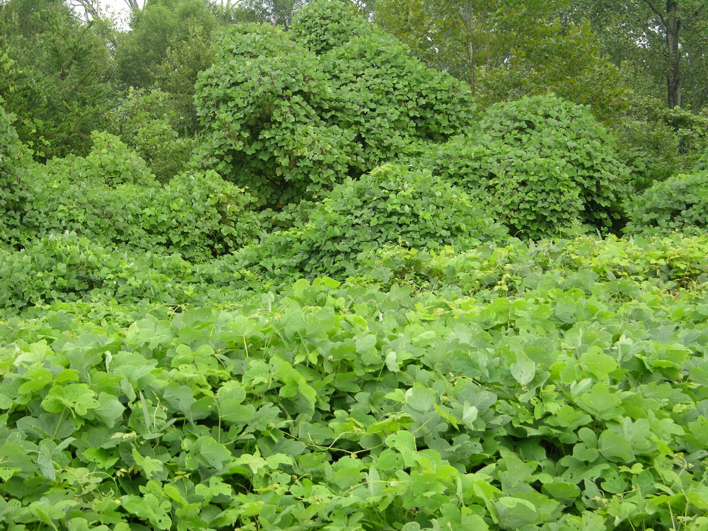
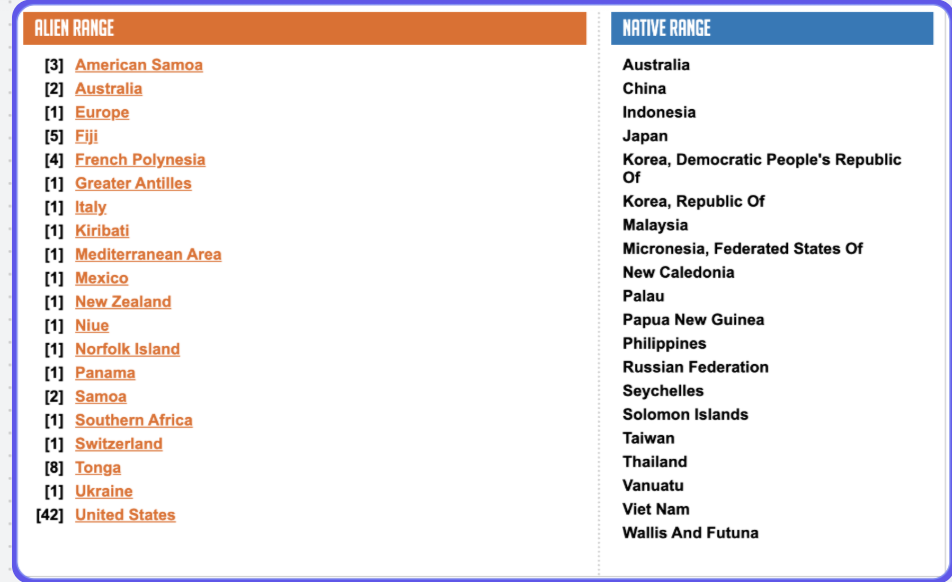
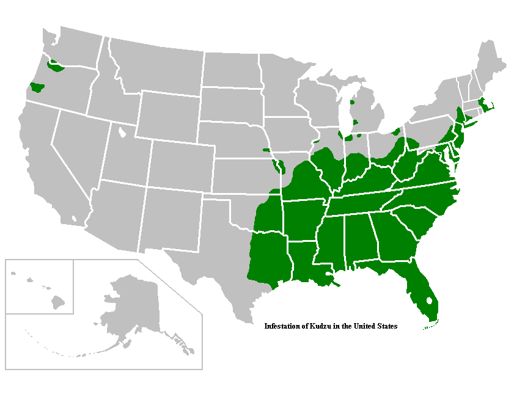
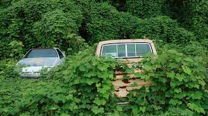
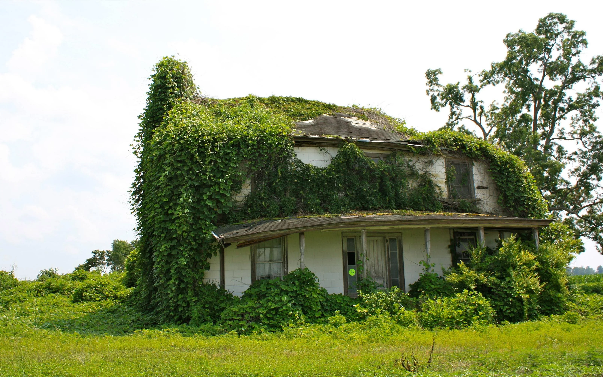
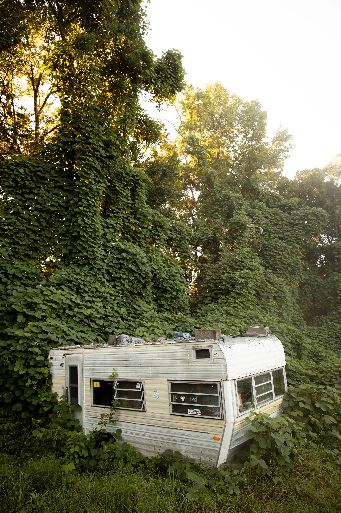
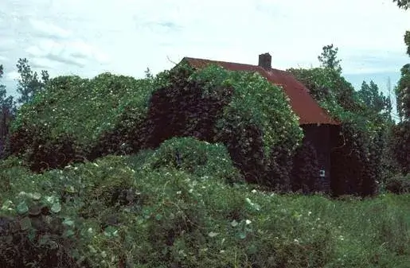

Context
Scientific Name
Pueraria montana var. lobata
Where It's From
Kudzu is primarily native to eastern Asia, specifically China and Japan.
Invading Areas
The main areas of invasion are the southeastern United States.


This information in the table above is from the GISD database.
How It Started
analytics
The Start
The start of this plant's invasion relies on two different things: erosion control and cattle feed. In the 1930s the government wanted something to control the soil and also use as cattle food. That's when they turned to Kudzu. At first they thought this was a great idea, but over time it took over and cost them tons of money.
"Few plants can survive once smothered by kudzu and small ecosystems can be radically altered. Infestations quickly spread in open habitats, rapidly covering the soil and low growing vegetation, and only slowed by adjoining forests."
Over time kudzu takes over anything in its path. In Georgia and Tennessee where it's mainly found, forests and timber can be covered in kudzu, causing uprooting and restrictions to plant nutrients for the plants underneath. The reason planting kudzu for cattle food wasn't worth it is because the cost to maintain it far exceeds the profit.

Kudzu Issues
Kudzu is known for carrying a host for soybean rust. What this does is attach to soybeans which then causes them to get a fungus, causing major damage and death to the plants.
Resource Management
eco
Control
The management of this plant is no joke. There are many ways to control it but not all of them are efficient. Some of the ways are mechanical and chemical control, and grazing.
The most efficient way to control this plant is using chemicals, also known as herbicides. This is the main form of management but can be very costly and can ruin surrounding plants and animal habitats. Another way of removing the plant is mowing or grazing. Mowing is efficient but takes multiple months of mowing to kill the plant off. Or you could use grazing, which consists of having goats eat the plant in the area.
"The most effective methods of removing kudzu typically involve both chemical control and mechanical control. However, chemicals can potentially be harmful to the surrounding environment."

Kudzu Photos


